Basic Artificial Intelligence
Navigation
游戏的导航(navigation)是指自动寻找两地点之间的路径的功能。
例子
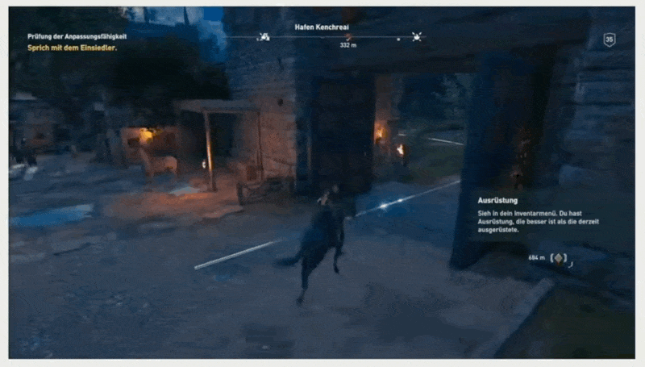
《刺客信条：奥德赛》
导航的流程为：
- 地图表示(map representation)
- 路径寻找(path finding)
- 路径平滑(path smoothing)

下面依次详细介绍这些步骤。
Map Representation
第一步中，我们需要告诉 AI 智能体哪里可以走（这些区域被称为可行走区域(walkable area)）。
- 玩家的可行走区域由角色的运动能力决定，包括物理碰撞、攀爬斜率/高度、跳跃距离等
- 如果让智能体模仿玩家移动的话，成本就太高了；并且还希望它们有着和玩家一样的可行走区域
下一个要考虑的问题是如何表示地图。接下来就带大家认识一下常见的地图表示形式：
- 航点网络(waypoint network)
- 网格(grid)
- 导航网格(navigation mesh)
- 稀疏体素八叉树(sparse voxel octree)
Waypoint Network
航点网络是指地图中的关键点(critical points)相互连接的网络。
-
航点源(waypoint source)包括：
- 指定重要地点 🔴
- 覆盖可行走区域的角点 🟢
- 连接邻近航点的内部点 🔵（以增加导航的灵活性）
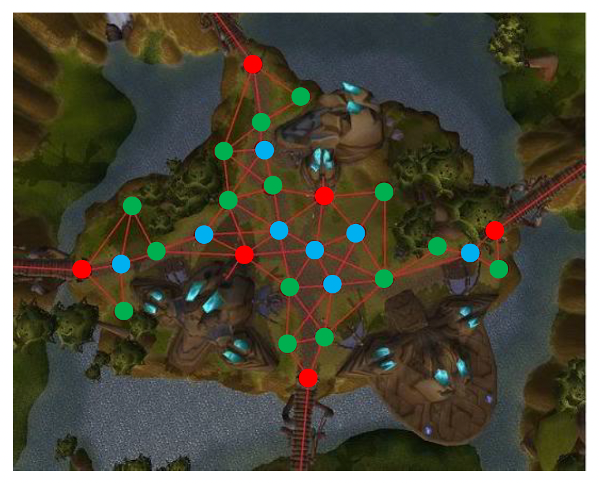
-
航点网络的使用类似地铁系统
- 寻找网络中最近的上/下车点（起点/终点）
- 在网络中寻路
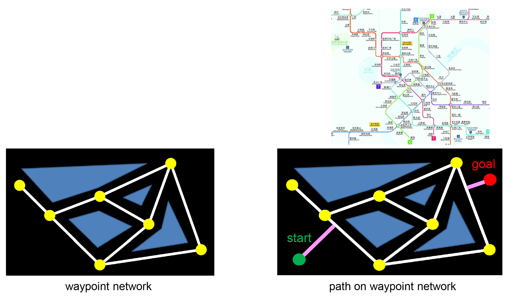
优点
- 易于实现
- 即便对于大地图，寻路速度也很快
缺点
- 灵活性有限：必须在导航前在网络中找到最近点
- 航点选择需要人工干预
Grid
网格可看作是对地图的一种直观离散化(discretization)表示，将地图均匀细分为多块小的规则网格。常见的网格形状有方形、三角形、六边形(hexagon)等。
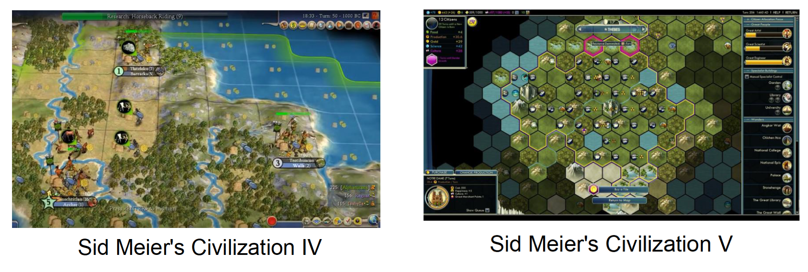
网格的一大特点是可以在运行时修改网格属性，以反映动态的环境变化（同时也便于调试）。
例子
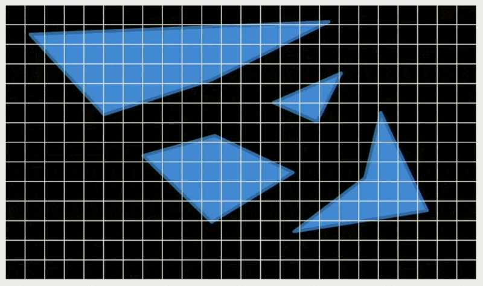
优点
- 易于实现
- 统一的数据结构
- 动态性
缺点
- 准确性取决于网格分辨率
- 网格过于稠密会影响寻路性能
- 内存消耗大
- 难以处理三维地图（层叠(overlapping)地图，比如下图中桥面与河流都是可行走区域）
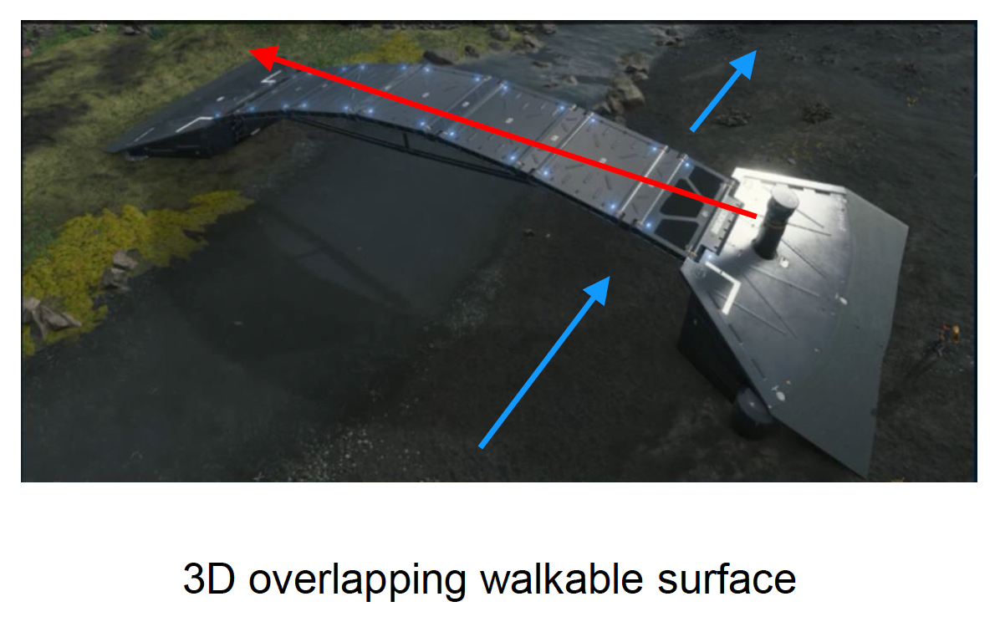
Navigation Mesh
导航网格解决了网格方法无法表示层叠可行走区域的问题。它基于物理碰撞和运动能力来近似表示角色的可行走区域，并且通过更低的网络密度来提升寻路性能。

例子
用一组相邻的凸多边形表示可行走区域。
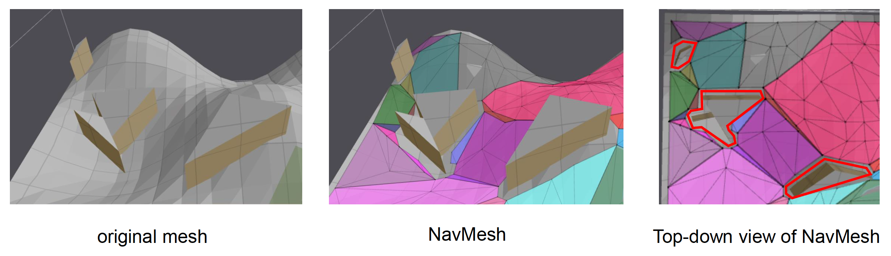
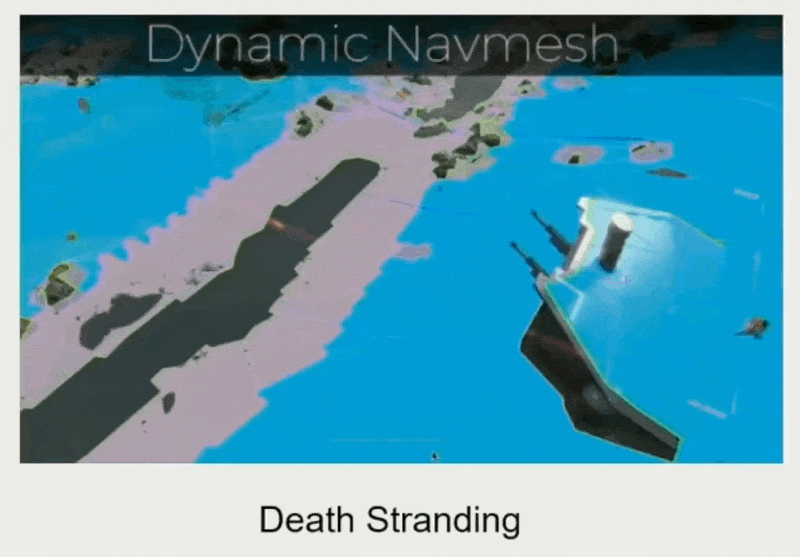
导航网格通常采用凸多边形(convex polygon)的原因：
-
寻路算法生成一系列需经过的多边形（称为多边形走廊(polygon corridor)）
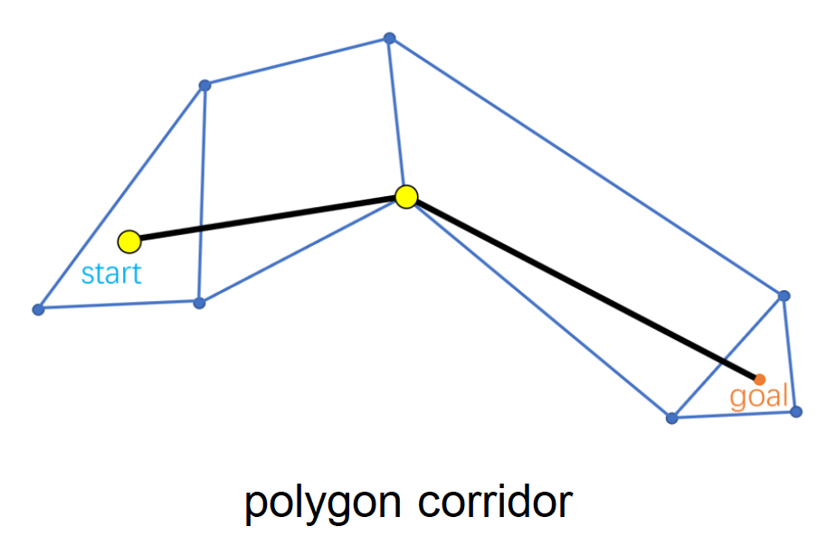
-
凸性保证了最终路径在多边形内有限，且两个相邻多边形只有一个公共边（门户(portal)）

优点
- 支持 3D 可行走表面
- 精确
- 寻路快
- 可灵活选择起点和终点
- 动态性
缺点
- 生成算法复杂（不过有一些开源库已经实现好了）
- 不支持 3D 空间
Sparse Voxel Octree
稀疏体素八叉树和空间划分中的八叉树方法类似，常用于表示「可飞行的」(flyable) 3D 空间。
- 粒度最细的一层的体素表示复杂的边界
- 更粗粒度的层级的体素表示均匀的区域

该方法的问题有：存储空间大、寻路麻烦。
例子

Path Finding
我们可以将地图表示中的距离抽象为图中的边成本。

那么寻路问题就可被抽象为无向图中的最短路问题(shortest path problem)。下面介绍一些解决此类问题的经典算法。

基本图论算法
它们无法用于计算加权最短路
-
深度优先搜索(depth-first search, DFS)优先沿着每一条分支路径探测到尽可能深的节点，直到目标节点被发现或达到叶子节点后才进行回溯。
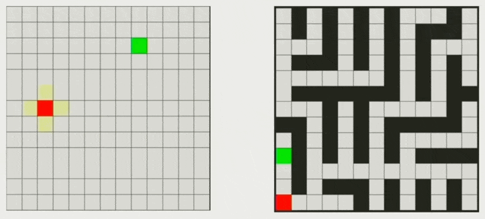
-
广度优先搜索(breadth-first search, DFS)从根节点开始，按照距离起始点的层级顺序，由近及远地逐层访问所有邻接节点。
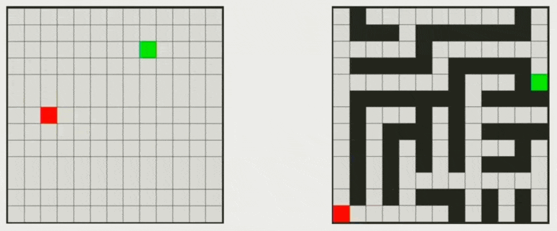
Dijkstra Algorithm
算法伪代码如下：
// initialization
for each vertex v:
dist[v] = ∞
prev[v] = none
dist[source] = 0 // start
set all vertices to unexplored
while destination not explored:
v = least-valued unexplored vertex
set v to explored
for each edge (v, w):
// update
if dist[v] + len(v, w) < dist[w]:
dist[w] = dist[v] + len(v, w)
prev[w] = v
算法看着有些抽象，但如果结合下面的示例阅读，理解起来还是容易的。
例子
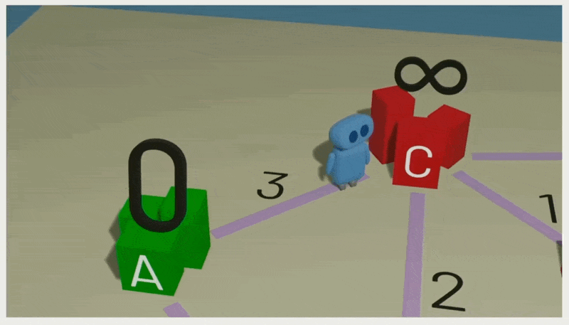
注意伪代码的最后一行，它的作用是记录当前节点的上一个节点，以便构建最短路经过的节点序列。
- 时间复杂度：\(O(V^2)\)
- 空间复杂度：\(O(V + E)\)
\(V, E\) 分别表示节点数和边数。
A*
最后要介绍的算法是 A* 算法。它基于 Dijkstra 算法，但每经过一个点时，不仅要考虑过去花费的路径成本，还得考虑到达目的地还需要多少距离，也就是说每一步总是选择这两者成本之和最小的节点进行扩展（贪心算法）。但后半部分我们无法直接计算出来，此时需借助启发式(heuristic)函数「猜」出来。
当且节点的成本计算公式为：\(f(n) = g(n) + h(n)\)，其中：
- \(g(n)\)：从起点到节点 \(n\) 的精确成本
- \(h(n)\)：从节点 \(n\) 到终点的估计成本（启发式函数）
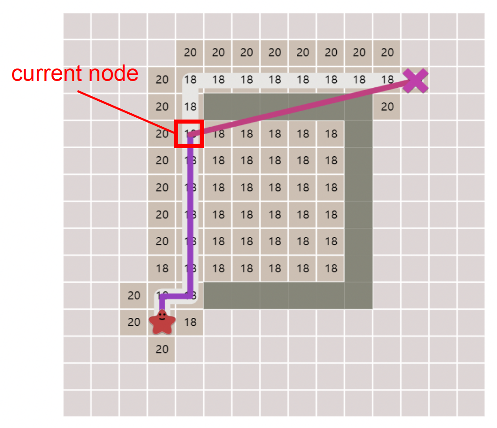
根据地图表示形式的不同，所采取的启发式函数也有所区别：
-
网格
- 由于网格只有 4 个移动方向（上下左右），因此采用曼哈顿距离(Manhattan distance)计算
- \(h(n) = D_1 \cdot (d_x + d_y)\)
- \(D_1\)：移动到邻近节点的成本
- \(d_x = |x_n - x_{goal}|\)
- \(d_y = |y_n - y_{goal}|\)
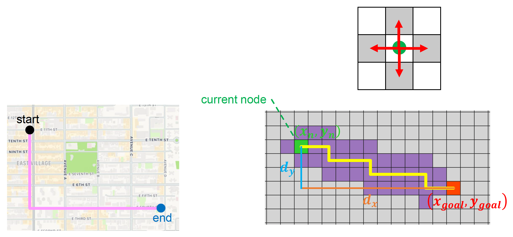
-
导航网格
-
有多种评估成本的选择：
- 若采用网格中心或顶点，则通常会高估成本
- 若采用混合方法，则会引入太多要检查的东西
- 因此选择边的中点是一个不错的权衡

-
由于可以在导航网格上以任意方向移动，因此采用直线距离（欧几里得距离）
- 使用进入当前节点的边的中点作为节点成本的计算点
-
\(h(n) = D \cdot \sqrt{d_x^2 + d_y^2}\)
- \(D\)：沿任意方向移动单位距离的成本
- \(d_x = |x_n - x_{goal}|\)
- \(d_y = |y_n - y_{goal}|\)

-
完整的算法伪代码如下：
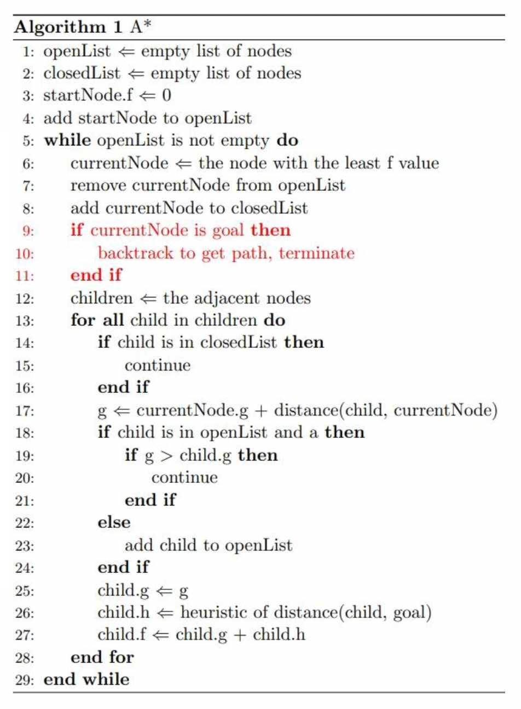
例子
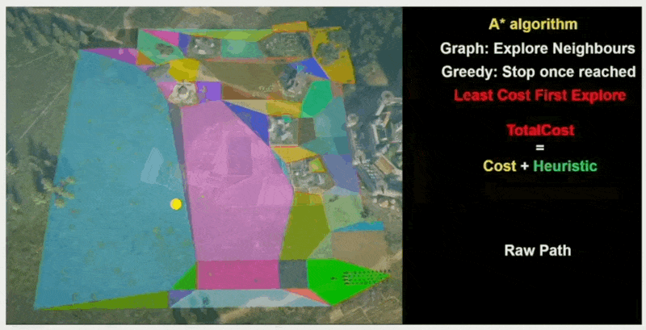
-
启发式函数的选择对 A* 算法的影响不小：
- 如果百分百准确估计，那么可以快速得到最短路
- 值太低 -> 还是能找到最短路的，但速度会比较慢
- 值太高 -> 有可能还没找到最短路就早早退出了
例子
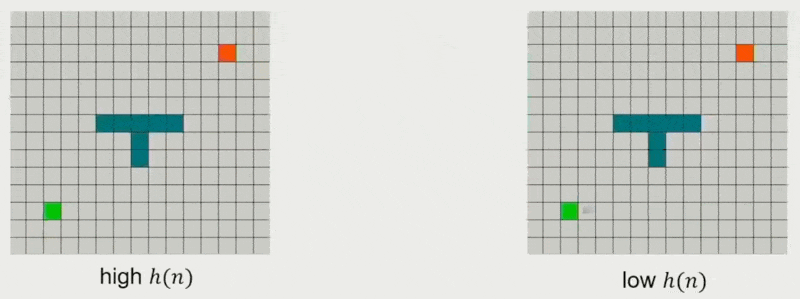
所以我们需要权衡好寻路算法的速度和准确度。
Path Smoothing
导航系统的最后一步是路径平滑。之所以要有这一步，是因为通过寻路算法得到的路径往往是呈锯齿状的，即出现很多不必要的转折处。
其中最经典的算法是漏斗算法(funnel algorithm)。下面简单介绍其原理（实现起来较为复杂，这里就略过了...）：
- 漏斗（图中蓝色扇形区域）的范围是路径的可能范围
- 如有必要，请缩窄漏斗，以贴合门户（即公共边）
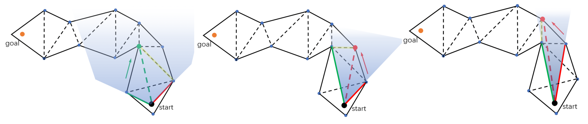
- 当终点位于漏斗时结束
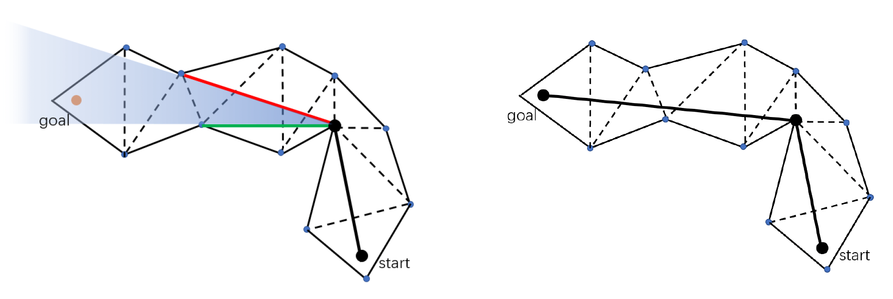
NavMesh Generation
再次回到导航网格这一地图表示形式。我们之前并没有讲它是如何生成的，因为这一块内容比较复杂，现在就来补上。生成流程大致为：
-
体素化(voxelization)：通过该方法对碰撞场景采样，找出可行走区域（图中蓝色区域）
- 坡度太大的地方不会被当做可行走区域
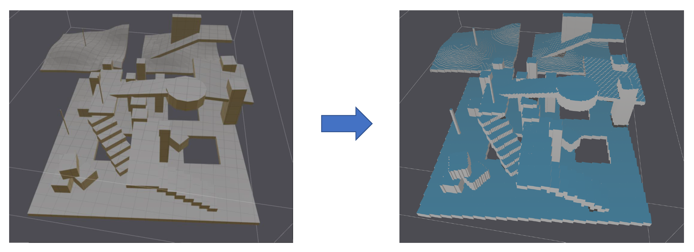
-
区域分割(region segmentation)
- 计算每个体素到边界（体素）的距离（得到右图所示的距离场）
- 用 AgentRadius 标记边界体素，以避免裁剪(clipping)

-
流域算法(watershed algorithm)：类似 Voronoi 图，以局部区域中离边界最远的点为种子向外扩展
例子
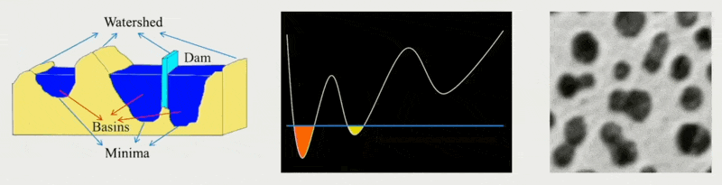
-
将邻近体素分割成区域，为之后生成多边形网格打下基础

-
区域在二维中没有重叠的体素
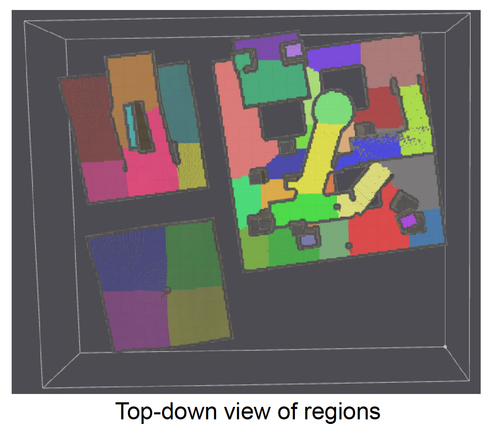
-
网格生成：根据分割好的区域生成导航网格

NavMesh Advanced Features
最后介绍有关导航网格的一些高级操作：
-
多边形标志(polygon flag)
- 用于标记地形类型：平原、山地、水域等
- 通过上色来添加用户定义的区域
- 由用户定义区域生成的多边形具有特殊标志
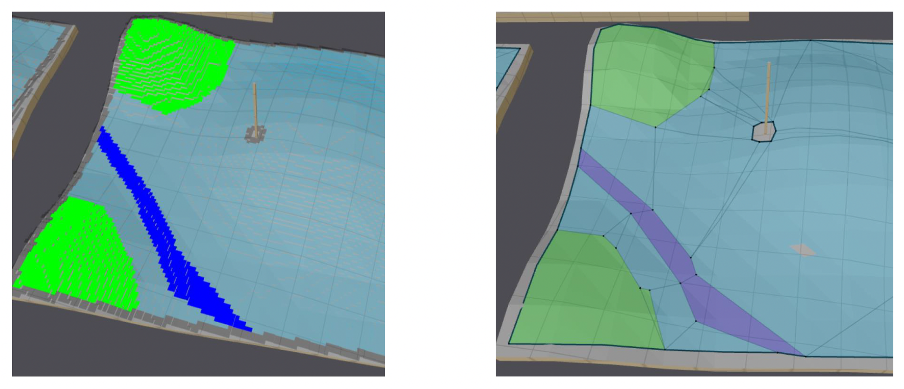
-
块(tile)
- 将空间划分为块，能快速响应动态对象，并且避免了重建完整的导航网格
- 通过块大小(TileSize)权衡寻路算法和动态重建算法的性能
例子
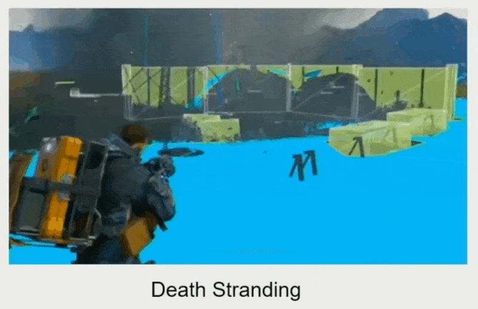
-
离开网格的链路(off-mesh link)：手动建立一些连接点和连接线，使得智能体具备跳跃、攀爬、传送等能力
例子
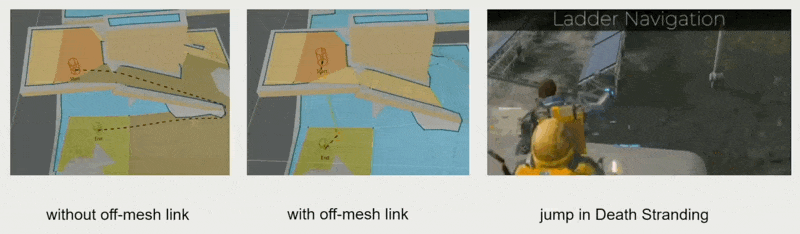
Steering
有了导航系统制定好的路径后，接下来就要让对象沿着路径移动了。但一般而言对象很难精确按照规划的路径行进。以车为例，它的运动受制于其自身的运动能力，包括：
- 线性加速度（油门(throttle)/刹车(brake)）
- 角加速度（转向力(steering force)）
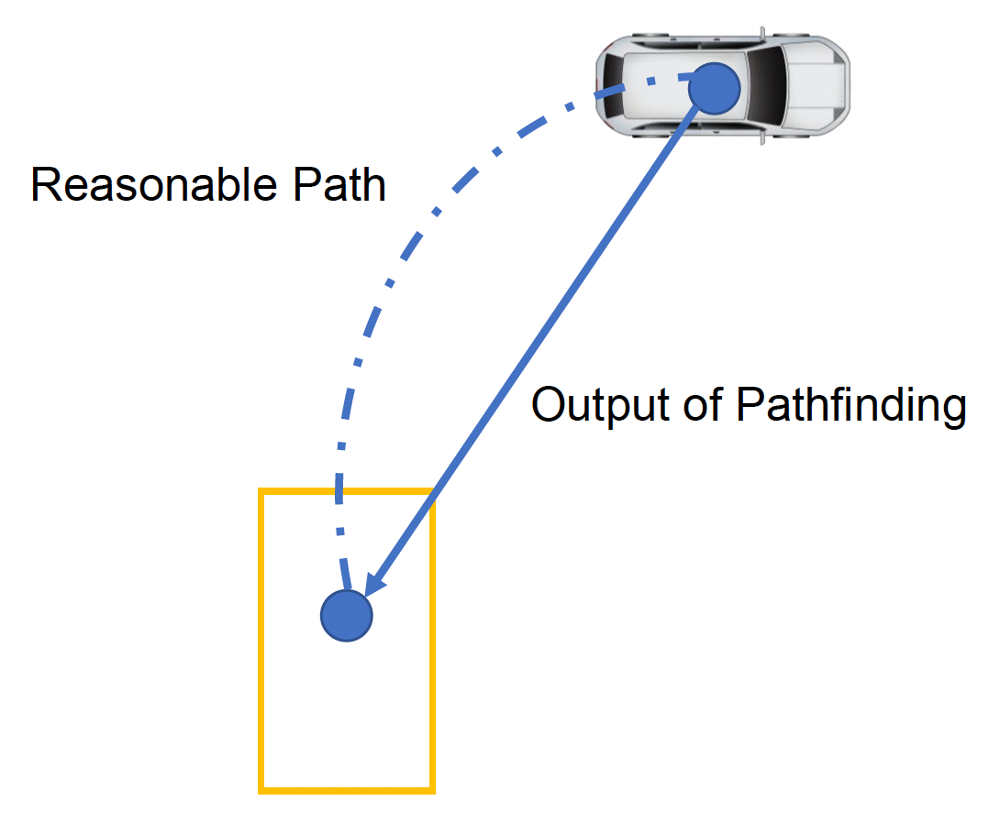
因此汽车的运动需根据这些限制进行适当调整。下面我们重点关注转向(steering)这一动作，它可以被分为以下几大基本行为：
-
追逐(seek)/逃避(flee)：让智能体转向/远离目标

- 本质上是位置匹配问题
- 以最大加速度加速接近/远离目标
- 可能会在目标附近振荡
- 输入：自身位置、目标位置
- 输出：加速度
例子

- 可通过在运行时修改目标来产生新的转向行为，比如追逐、跟随等
例子
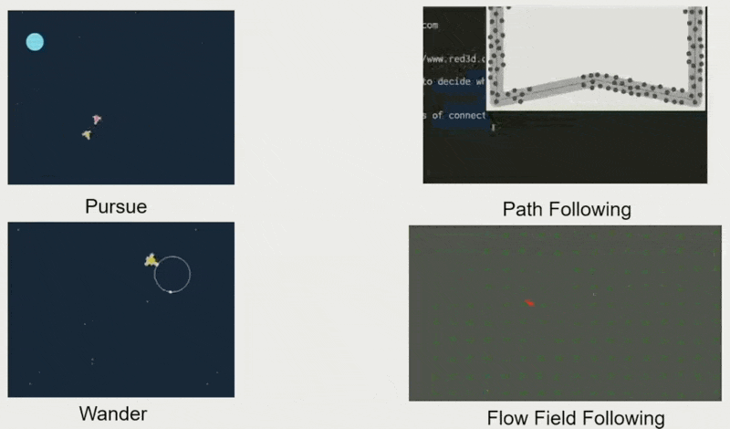
-
速度匹配(velocity matching)：和目标速度匹配
- 根据匹配时间和速度差计算加速度
- 智能体的加速度受最大加速度限制
- 输入：目标速度、自身速度、匹配时间
- 输出：加速度
例子
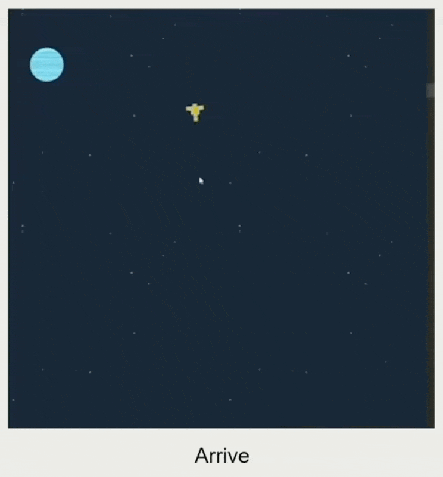
-
对齐(alignment)：和目标朝向匹配
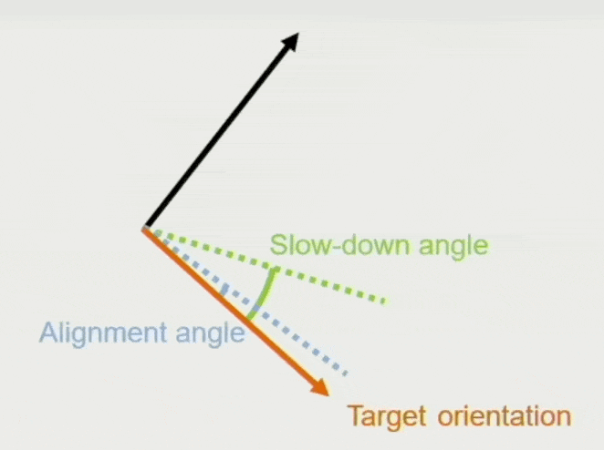
- 输入：目标朝向、自身朝向
- 输出：角加速度
例子

Crowd Simulation
在群体(crowd)中，一大群人在同一环境中单独或成群分享信息，于是有了以下行为：
- 碰撞避免
- 成群移动
- 编队运动
- ...
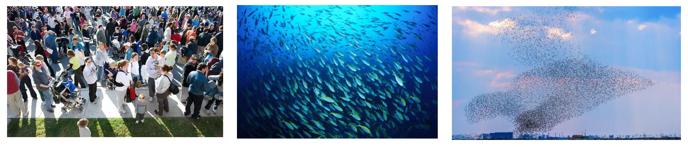
Crowd Simulation Models
Reynolds 大佬在「鸟群」(boids)系统中提出了三类群体模拟模型：
-
微观模型(microscopic models)：
- 自底向上，聚焦于个体(individuals)
-
动物群体的群聚动态(flock dynamics)作为一种涌现(emergent)行为，通过以下简单的预定义规则建模每个个体的运动：
- 分离(seperation)：远离所有邻居
- 凝聚(cohesion)：驶向「质心」
- 对齐(alignment)：与附近的智能体对齐
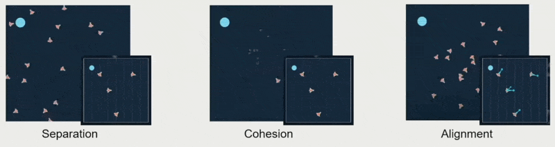
-
易于实现，但不适合模拟复杂的行为规则
例子
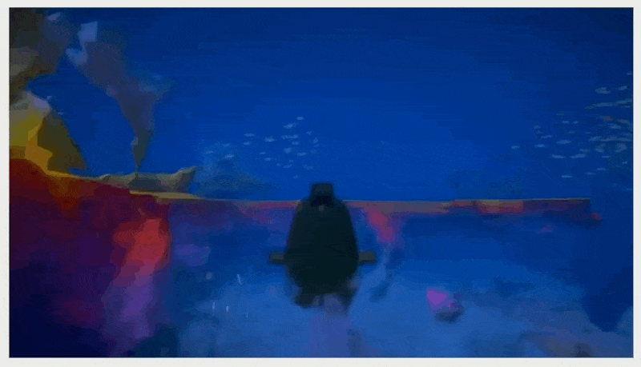
-
宏观模型(macroscopic models)：
- 将群体看成一个统一而连续的整体
- 通过潜在场或流体动力学控制运动
- 不考虑个体与环境的个体层面的互动
例子
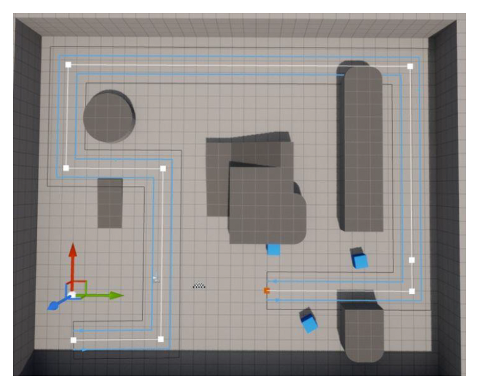
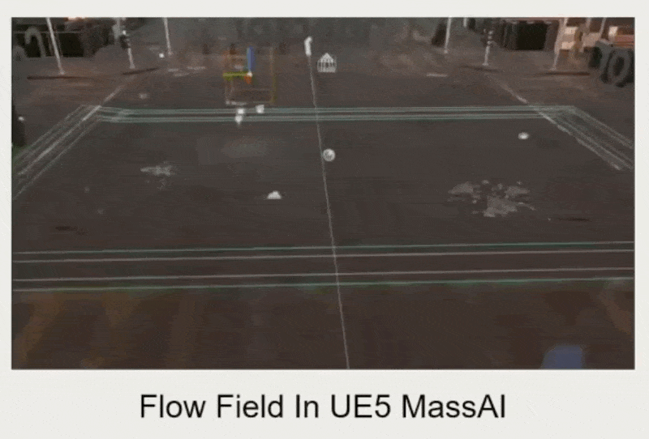
-
中观模型(mesoscopic models)：
- 模拟群体运动时关注整体和个体
- 将群体划分为组
- 处理各组之间及组内个体的互动
- 微观模型与形成规则或心理模型的组合
例子
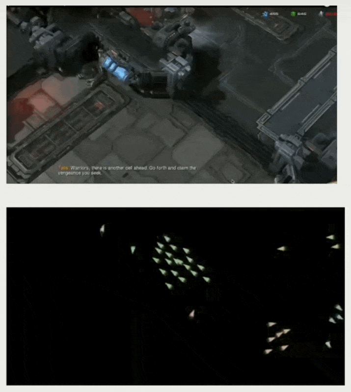
Collision Avoidance
碰撞避免是群体模拟中需重点关注的行为。下面将介绍一些碰撞避免的常见实现方法。
Force-Based Models
第一类方法是采用基于力的模型。
- 社会心理和物理力共同影响人群的行为
- 两个对象相距越近，斥力越大；相距越远，引力越大
- 为每个障碍物增加一个距离场，离障碍物越近，距离场的值越小，受到的斥力越大
- 个体的实际移动取决于期望速度及其与环境的互动
- 可用于模拟恐慌的逃生人群的动态特征
例子

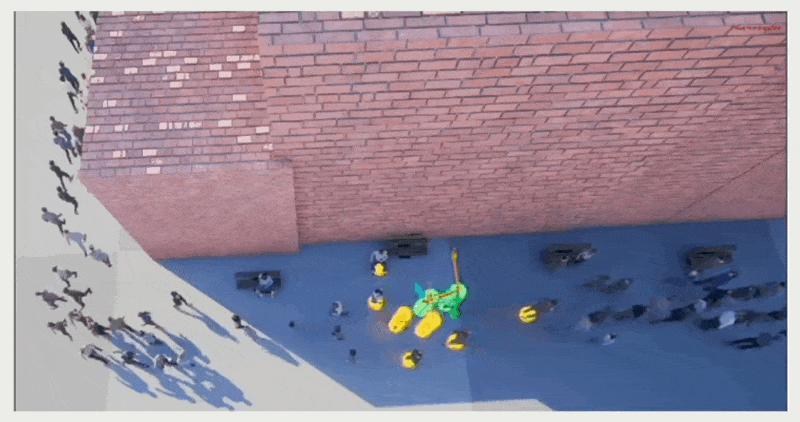
优点：可以对其扩展，以模拟更多的人群涌现行为
缺点：与物理模拟类似，模拟步长应足够小
Velocity-Based Models
第二类方法是采用基于速度的模型，即根据邻居信息确定速度空间。
- 能在局部空间模拟
- 适用于碰撞避免
例子

相关算法：
-
速度障碍(velocity obstacle, VO)

- 假设其他智能体无响应，计算自身的躲避(dodge)速度
- 适用于静态和无响应的障碍物
- 问题：
- 超调(overshoot)
- 导致两个试图躲避彼此的智能体之间产生振荡
-
相互速度障碍(reciprocal velocity obstacle, RVO)（当前标准的碰撞避免算法）
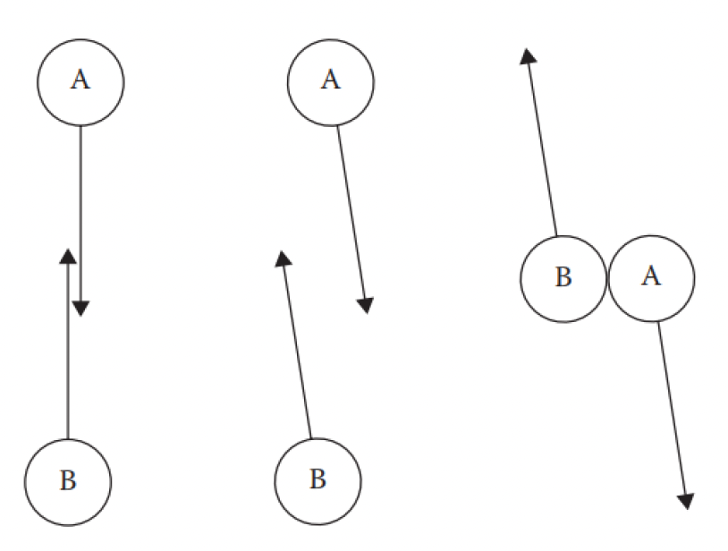
- 假设其他智能体使用相同的决策过程（相互合作）
- 双方各退让一半以避免碰撞
- 保证两个智能体无振荡和避免碰撞
-
最优相互碰撞避免(optimal reciprocal collision avoidance, ORCA)

Sensing
感知(sensing / perception)是 AI 智能体的基础能力，而通过感知得到的信息往往作为智能体做决策的基础。这些信息可分为
-
外部信息
-
静态空间信息(static spatial information)
-
导航数据
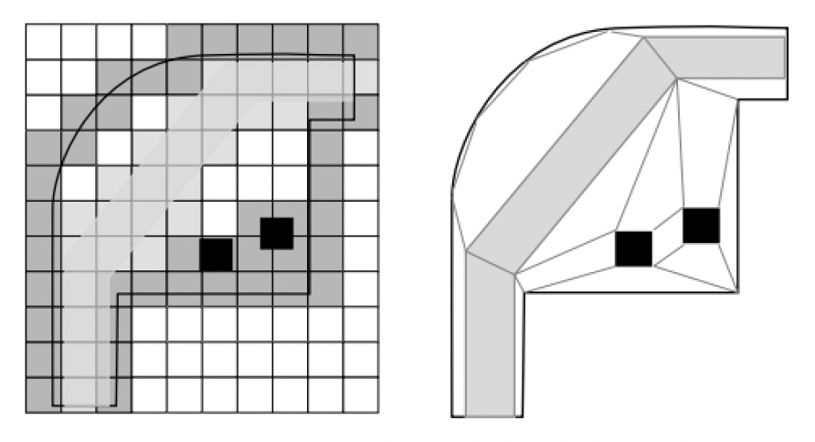
-
战术地图(tactical map)
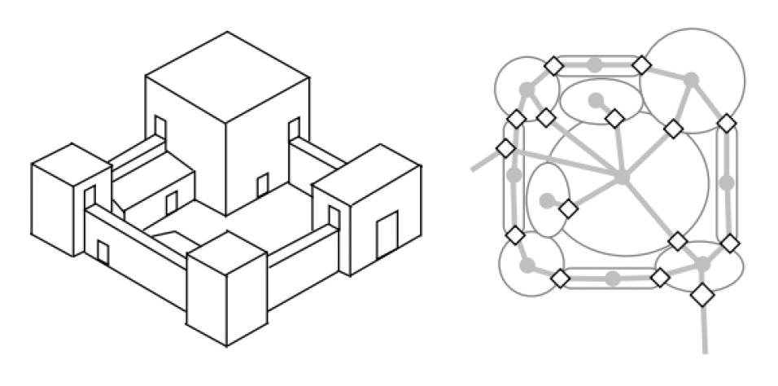
-
智能对象(smart object)（可交互的东西）
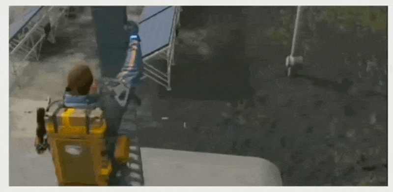
-
覆盖点(cover point)
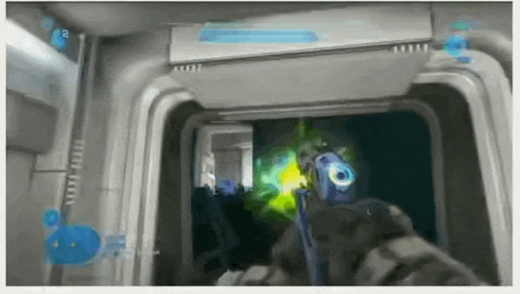
-
-
动态空间信息(dynamic spatial information)
-
影响力图(influence map)：比如敌人多的地方危险系数高，智能体就会避开这些地方
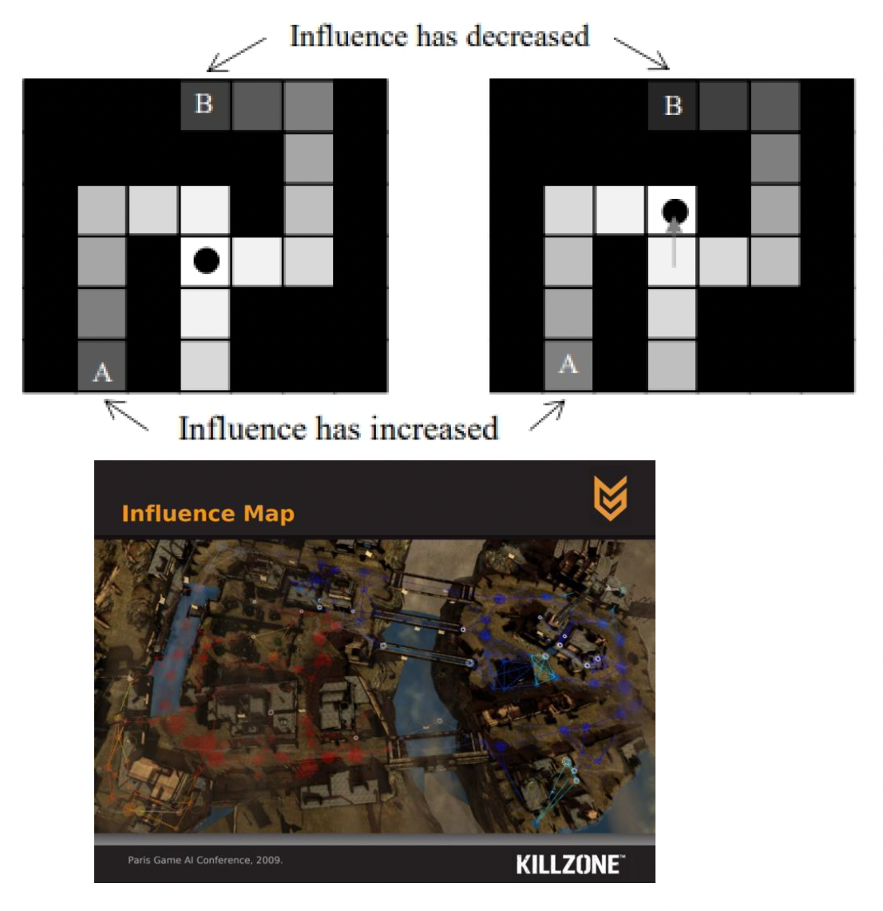
例子
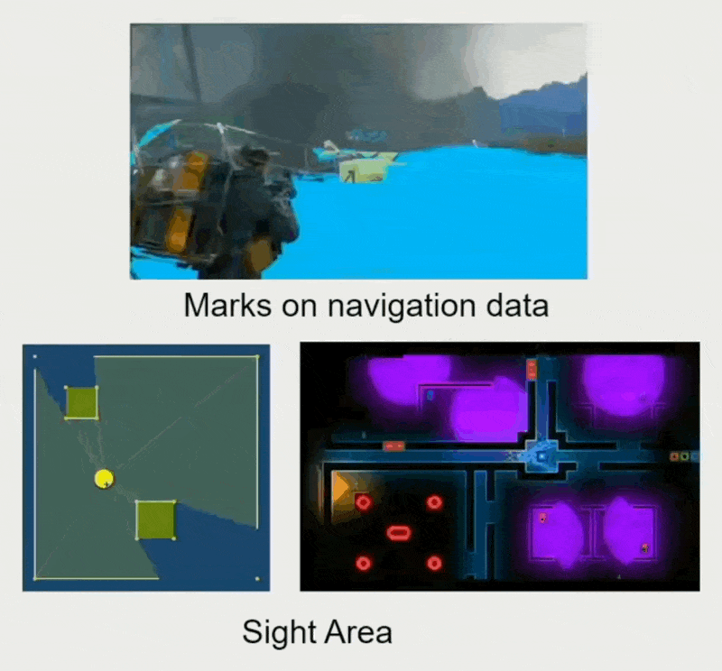
-
游戏对象
- 从角色感知到的信息
- 单个角色可以存有多个角色信息，因为它可以被多个智能体感知
- 通常包含：
- 游戏对象 ID
- 可见性
- 上次感知方法
- 上次感知位置
-
-
角色信息(character information)
-
-
内部信息：智能体自身的信息
- 包括位置、血量(HP)、护甲(armor)状态、增益(buff)状态等
- 我们往往可以自由访问这些信息
最后介绍一下感知模拟的特点：
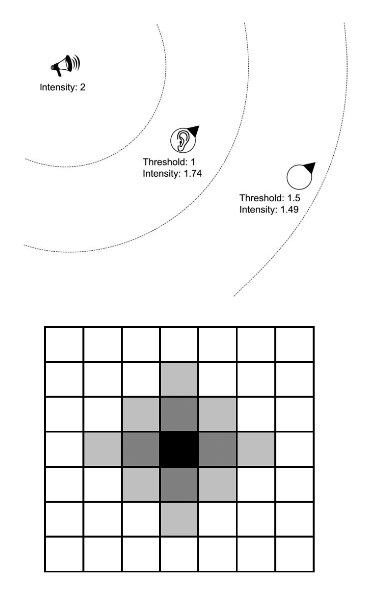
- 光照、声音和气味在空间中传播
- 有最大的传播范围
- 感知信息以不同模式随时间和空间变化衰减
- 利用辐射场来模拟感知信号
- 可简化为影响力图
- 覆盖场可以感知信息
Classic Decision Making Algorithms
本节将会介绍一些经典的决策算法：
- 有限状态机(finite state machine)
- 行为树(behavior tree)（类似决策树(decision tree)，但不是同一个东西）
现代游戏中还会用到以下算法，但放到下一讲介绍，作为进阶部分：
- 层级任务网络(hierarchical tasks network)
- 目标导向的行为规划(goal-oriented action planning)
- 蒙特卡洛树搜索(Monte Carlo tree search)
- 深度学习(deep learning)
Finite State Machine
有限状态机(finite state machine, FSM)的一大特点是根据某些条件(conditions)从一个状态(state)转换到另一个状态，这一过程被称为转移(transition)。
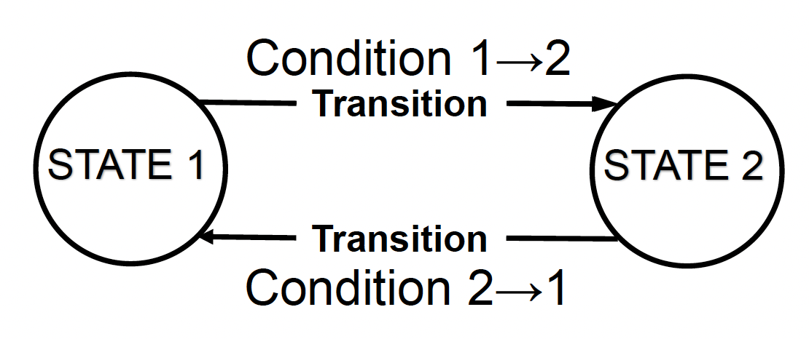
例子

优点
- 易于实现和理解
- 处理简单情况非常快
缺点
- 可维护性差，尤其是添加和删除状态的时候
- 可复用性差，无法用于其他项目或角色中
- 可扩展性差，难以对其修改，用于复杂情况
FSM 的一个变体是层级有限状态机(hierarchical finite state machine, HFSM)，它是反应性(reactivity)与模块化(modularity)之间权衡的产物。
- 反应性：快速且高效地对变化做出反应的能力
- 模块化：系统组件可能被分解成构建块，以及重新组合的程度

可以看到，转换为 HFSM 后，得益于模块化程度的增加，状态图的可读性得到提升。但这样做带来的一个问题是子状态机之间可能会添加很多飞线，所以整个运行过程还是比较慢的。
Behavior Tree
相比于关注状态抽象和转换条件的状态机，行为树(behavior tree, BT)更贴合人类的思维方式。
例子

BT 的节点分为：
-
执行节点(execution nodes)（叶节点），可进一步分为：
- 条件节点(condition nodes)（黄圈）：反映自身状态或感知，返回
true或false - 行动节点(action nodes)（绿框）返回成功(success)/失败(failure)/运行中(running)
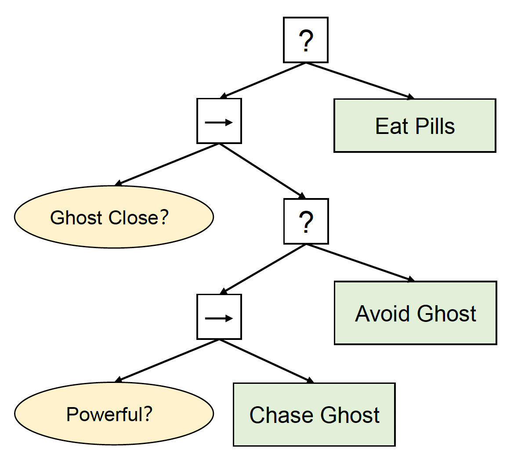
- 条件节点(condition nodes)（黄圈）：反映自身状态或感知，返回
-
控制节点(control nodes)（内部节点）
- 控制流由子节点返回值决定
- 每个节点都会返回成功(success)/失败(failure)/运行中(running)
-
典型的控制流节点包括：
-
序列(sequence) \(\boxed{\rightarrow}\)
- 顺序：从左到右执行子节点
- 停止条件和返回值
- 若其中一个子节点返回失败或运行中，则返回相应值
- 若所有子节点返回成功，则返回成功
-
如果停止并返回运行中：下一次执行从运行中的动作开始

-
用途：允许设计师制定规划
例子
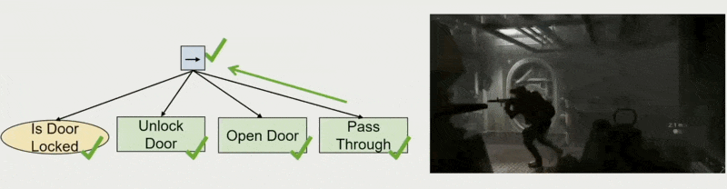
-
选择符(selector) \(\boxed{?}\)
- 顺序：从左到右执行子节点
- 停止条件和返回值
- 若其中一个子节点返回成功或运行中，则返回相应值
- 若所有子节点返回失败，则返回失败
-
如果停止并返回运行中：下一次执行从运行中的动作开始

-
用途：
- 可选择一个响应不同环境的行动
- 可根据优先级做正确的事
例子
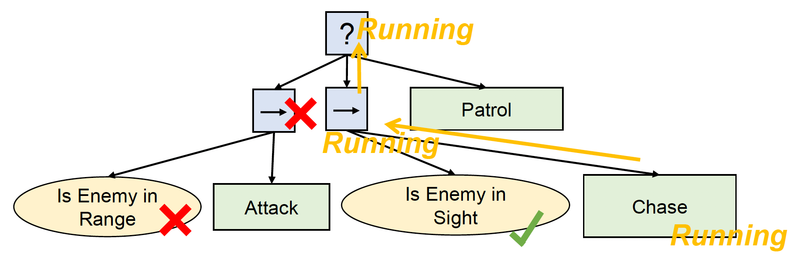
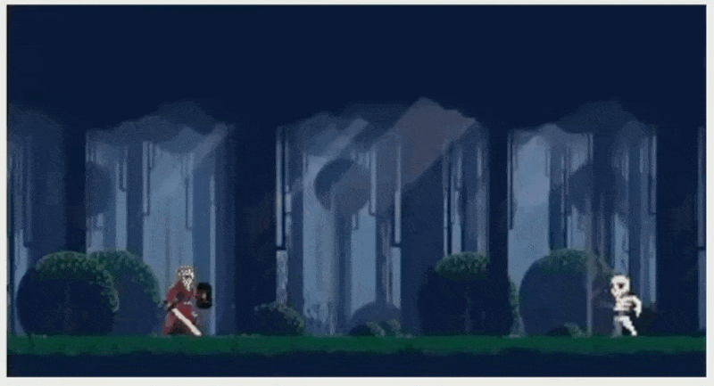
-
并行(parallel) \(\boxed{\rightrightarrows}\)
- 顺序：逻辑上并行执行所有子节点
- 停止条件和返回值
- 若至少有 M 个子节点（编号从 1 到 N）返回成功，则返回成功
- 若至少有 N - M + 1 个节点返回失败，则返回失败
- 否则返回运行中
-
如果停止并返回运行中：下一次执行从运行中的动作开始
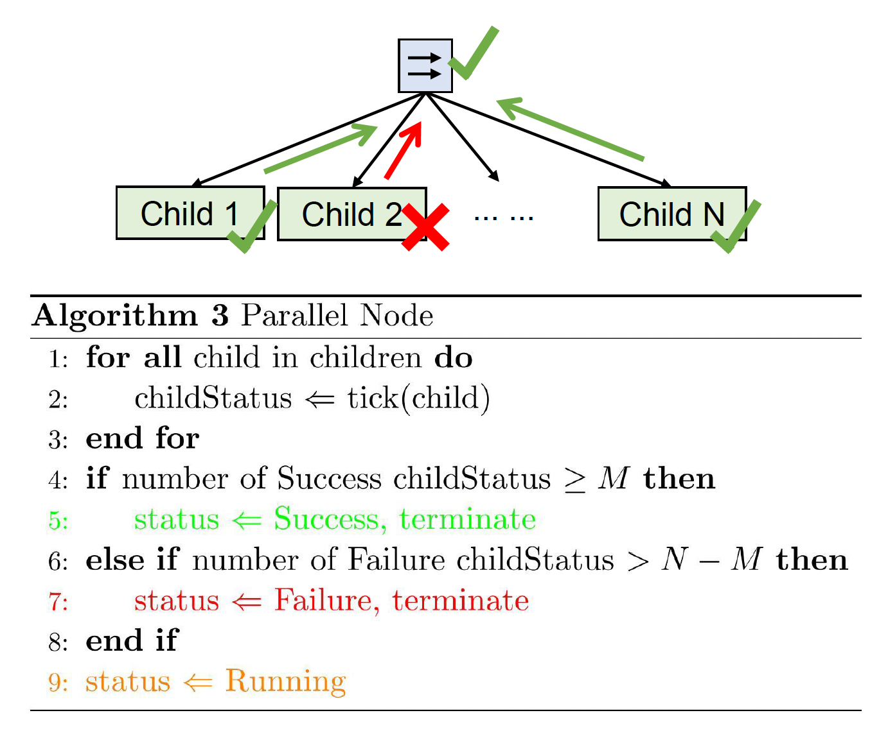
-
用途：允许同时做多件事（多线程）
例子
-
装饰器(decorator) \(\boxed{\delta}\)（实际是菱形包裹，但是无法利用基础 \(\LaTeX\) 打印出来 QAQ）
- 一类只有单个子节点的特殊控制节点
- 通常表示一些常用的行为，比如：
- 循环执行(loop execution)
- 仅执行一次(execute once)
- 定时器(timer)
- 时间限制器(time limiter)
- 值修改器(value modifier)
- ...

例子
利用定时器实现「巡逻」(patrol)的行为
-
总结
在 BT 上做决策时，我们往往会在节点上打勾(tick)。
- 打勾反映我们的思考过程
- 从根节点开始打勾
- 从上往下、从左往右地经过不同节点
- 每个节点必须返回成功/失败/运行中三种返回值之一
我们还对 BT 做了以下优化，提高其可读性：
-
前提(precondition)：可简化 BT 结构

-
黑板(blackboard)：作为 BT 的内存
- 树上的不同分支可通过黑板交换信息
优点
- 模块化、层级组织：BT 的每棵子树可看作一个模块，并由返回状态提供标准接口
- 人类可读
- 易维护：修改仅影响部分树的内容
- 反应性：每一个 tick 中进行思考，以快速根据环境改变行为
- 易调试：每个勾表示一个完整的决策过程，所以调试容易
缺点
- 由于要从根节点开始打勾，所以成本大
- 反应性越高，要检查的条件更多，成本就更大
为了使 AI 更加深思熟虑(deliberative)，游戏设计师引入了 AI 规划技术，以提高 AI 的规划能力。
- 管理一系列行动
- 规划者根据初始世界状态制定计划
更详细的内容请见下一讲，尽请期待！
评论区